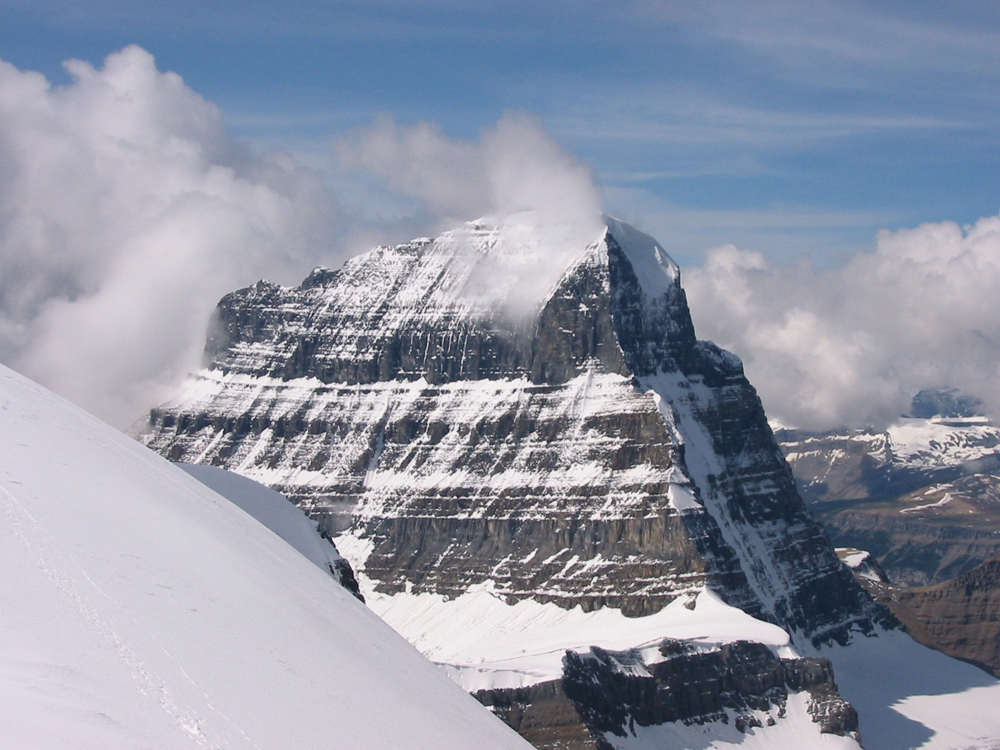

Mount Alberta, Alberta
Image Credit: Irhunt, Creative Commons CCO 3.0
{kind=link}
North America is home to many beautiful Mountains, Glaciers and Ice fields.
Some of the most notable include:
- Mount Alberta (pictured above),
- The Athabasca Glacier,
- Mount Logan, and
- Glacier Bay.
Here is some information about each of these sites:
| Site | Latitude | Longitude | Elevation | Fun Fact |
|---|---|---|---|---|
| Mount Alberta | 52°17′14″N | 117°28′36″W | 3, 619 m | Mount Alberta is the 6th highest peak in the Canadian Rockies |
| Athabasca Glacier | 52°11′27″N | 117°15′19″W | 3, 000 m (average) | The Athabasca Glacier is one of the six toes of the Columbia Icefield |
| Mount Logan | 60°34′02″N | 140°24′10″W | 5, 959 m | Mount Logan is the highest mountain in Canada |
| Glacier Bay | 58°30′N | 137°00′W | 0 m | Glacier bay is part of the Glacier Bay National Park and Preserve, and is a UNESCO World Heritage Site |
For more detailed information, please see each site's respective page.
{kind=link}